CLOUD STORAGE APP FOR HEALTH & FITNESS ENTHUSIASTS
SUMMARY
The goal of this project was to create a cloud storage app that would stand out in the cloud storage and organization market. RE:fresh was created to provide a solution for health & fitness enthusiasts who are interested in saving information from the web and other content in a convenient and easy to use app. It also provides tools for people who want to reach their health & fitness goals.
ROLES
- Research
- UX/UI Design
- Product Design
DELIVERABLES
- User Flows
- Wireframes
- Hi-fi Mockups
- Branding
- Style Guide
TOOLS
- Figma
- Sketch
- InVision
- Usability Hub
THE PROBLEM
In this project I was asked to research and design a cloud storage app. The issue I was expected to solve was to find a solution for a cloud storage app that would have features that stand out of the other competitors such as Google Drive, Dropbox, Pinterest and Evernote.
THE SOLUTION
RE:fresh is a cloud storage app that is tailored for health and fitness enthusiasts. Through the research I conducted, I discovered that there is room for a cloud storage app that is specific for health & fitness, where users can store all of their interests as well as get tools that will help them stay on track with their goals.
THE PROCESS
In this project, a client was excited about the possibilities in the cloud storage and organization market. He didn’t have a very clear vision in mind, and I had to come up with an idea. The goal was to find the right combination of features to meet the needs of a particular audience.
The client had a few features that he wanted included in the app:
- Saving content from the web
- Organizing the content using some kind of organization system
- Creating content
- Uploading files from a computer or mobile device
- Collaboration
- Sharing
- Connecting with other users
The client also wanted to leverage the “Network Effect” for growth.
My role was to do the research and analyze processes in the competitors’ products as well as design the app.
RESEARCH & DISCOVERY
COMPETITIVE ANALYSIS
I researched some popular cloud storage apps: Pinterest, Paprika (recipe manager), Foursquare (travel site) and Fitbit. I was trying to determine which market would benefit from a cloud storage app. I discovered that there are already plenty of products in the organizing, recipes and travel markets. However, I saw that there is room for a health and fitness app in the cloud storage market.
You can read more about the competitive analysis here.

|

|
Paprika | 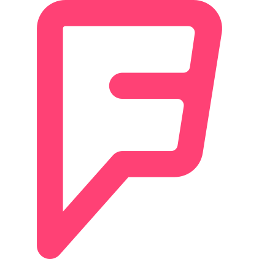 | |
|---|---|---|---|---|
|
Ease of organizing |
||||
|
Useful features |
||||
|
Ease of use |
||||
|
Intuitive navigation |
I also analyzed the user flows of each of the competitors for onboarding, saving an item and organizing into categories, so that I could see the strengths and weaknesses of the competitors.
You can find the user flows here.
SURVEY
The goals of the survey were:
- To determine if the users are interested in the features that the client wanted.
- Find out if users really want collaboration features and what kind of collaboration features would they like. Also, who would the users collaborate with and how?
- Get users thoughts about the competition: are they using any of the competing products? And, what do users like and dislike about the competitors’ products?
See survey
SURVEY FINDINGS
90%
of the respondents were women
70%
do not use a fitness tracker
82%
are interested in health & fitness
Features that users like in competition:
Tracking steps
Tracking calories burned
Tracking calories consumed
STRATEGY
PERSONAS
After analyzing the survey results, I created 2 different personas that reflected the potential users of the app.
“I love my Fitbit but it doesn’t provide a way to save health related articles”
MICHELLE
Busy Mom & Fitness Instructor
- Age
- Location
- Occupation
- 43
- Hutchinson, MN
- Transcriptionist & Fitness Instructor
Goals
- Stay active
- Get motivation to move
- Keep track of calories burned
Frustrations
- Activity syncs only with wi-fi
- Movement from spinning doesn’t get detected
“I wish there was a place where I can create recipes and share them with friends”
SHEILA
The Adventurous Yogi
- Age
- Location
- Occupation
- 38
- Ashland, OR
- Writer & Web Designer
Goals
- Eating healthier
- Motivation to live a healthier lifestyle
- Lose weight
Frustrations
- Doesn’t like to spend much time on technology
- Doesn’t like logging food & activity
USER STORIES
Based on the research I conducted, I created a list of user stories, taking into account the personas I created and thinking what would matter most to them?
Some of the user stories:
- I want to collaborate with friends
- I want to save content
- I want to organize content
- I want to track my fitness and food intake in one place
I prioritized the tasks according to what was critical for the MVP, but at this stage I gave some of the tasks greater priority then they should have received. As I evaluated later on in the process, it became clear to me that some of these tasks are not critical for the MVP and I adjusted my list.
See all user stories
USER FLOWS
Using Figma, I created user flows based on the survey results and the requests of the stakeholder. I looked at the competitors’ user flows and noticed what they did right and what could improve. I also looked at the survey results and what the users liked and disliked about the competition. I discovered the trends that needed to be applied to my user flows:
1. Saving content from the web (recipes, articles, workouts, videos, tips for healthy living, etc.).
2. Features such as organizing content into categories; tracking activity; creating content; uploading content; sharing with friends and collaborating.
Note: At this stage I had a lot of user stories that were reflected in the user flows. As I progressed into the project, I realized that some of the tasks were not essential for the MVP and I removed them from the User Stories list and from the User Flows.
See all user flows
Login Process - User Flow
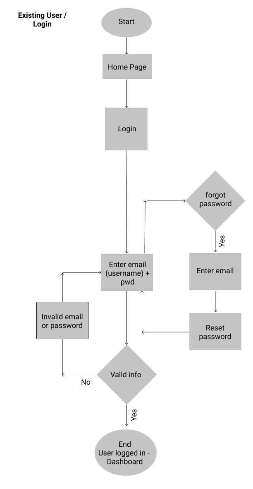INFORMATION ARCHITECTURE
SITE MAP & CONTENT STRATEGY
I created a site map based on the user stories and user flows and made sure that each was represented in the site map.
Site Map
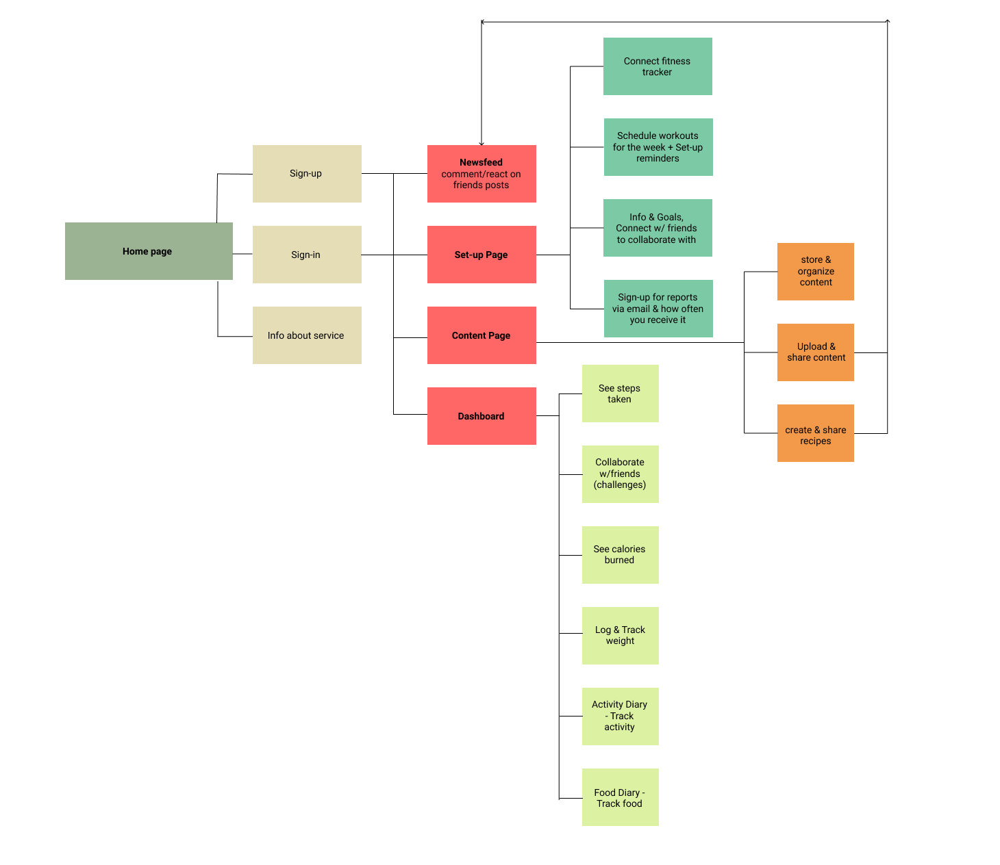Using the site map, I created a document outlining the content strategy for each part of the site map.
See content strategy
VISUAL DESIGN
WIREFRAMES
I started sketching the wireframes by hand, using the Crazy Eights technique for the landing page.
I hand sketched all the wireframes and then went on to design them on Figma. I designed the wireframes for a desktop. As I was designing the wireframes, I referred back to the user stories, user flows, personas and content strategy to make sure that everything is included.
Crazy Eights Homepage Sketches
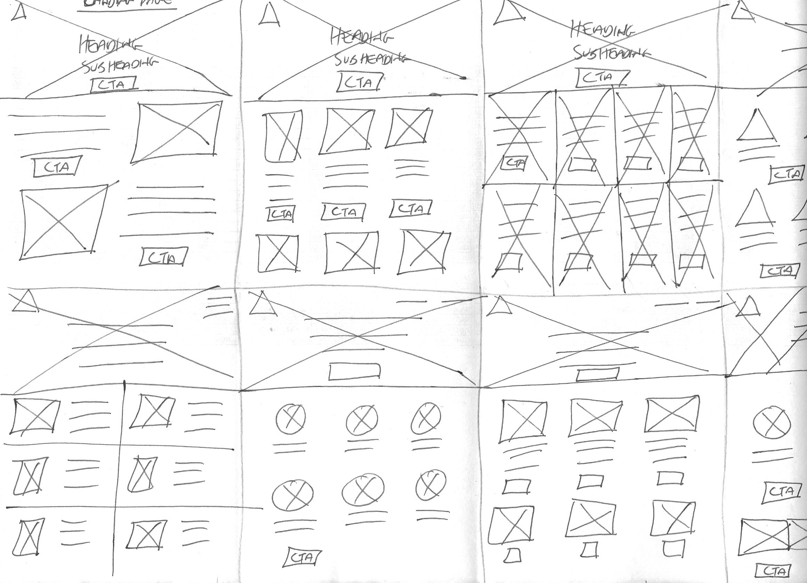Dashboard Lo-Fi Wireframe
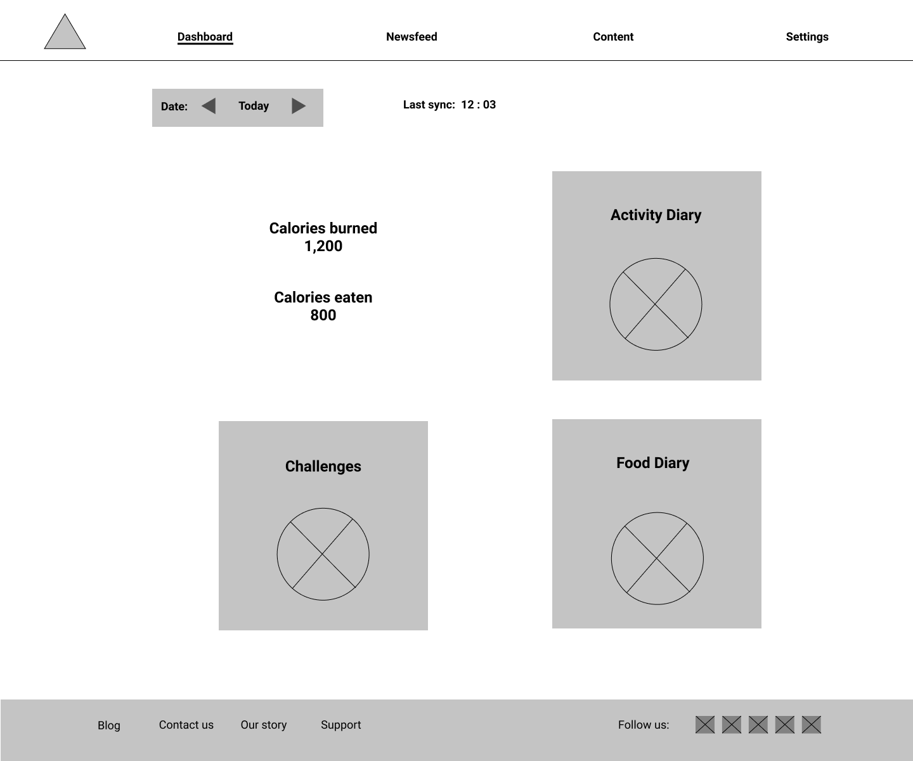Content Page Lo-Fi Wireframe
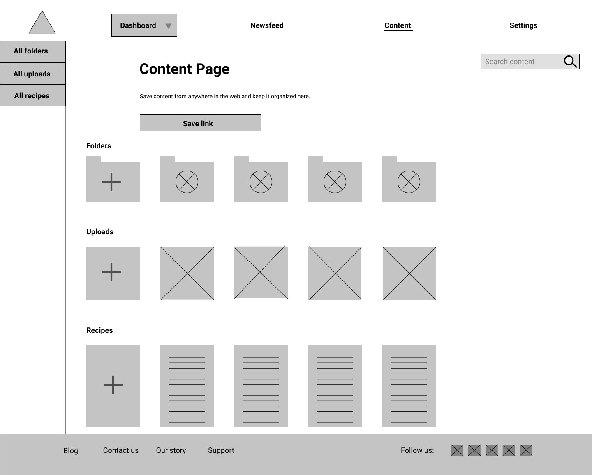I had to make several iterations to my wireframes such as scaling down some of the components, adding components and restructuring.
CLICKABLE PROTOTYPE I
More details in the processes of each user flow came up that I didn’t think about in the wireframing stage. I spent a considerable amount of time creating the prototype, using Figma. I added screens that were essential for the proper function of the website, and referred back to the user flows to make sure every step was represented. I had to alter some of the user flows when I saw that some of the things I included there didn’t make sense.
Dashboard
It was hard to tell what to look at first, so I changed the design of each component as on the page.
Sign-up page
There was too much space between elements. I reduced the spacing and changed the layout of fields and buttons to being side by side.
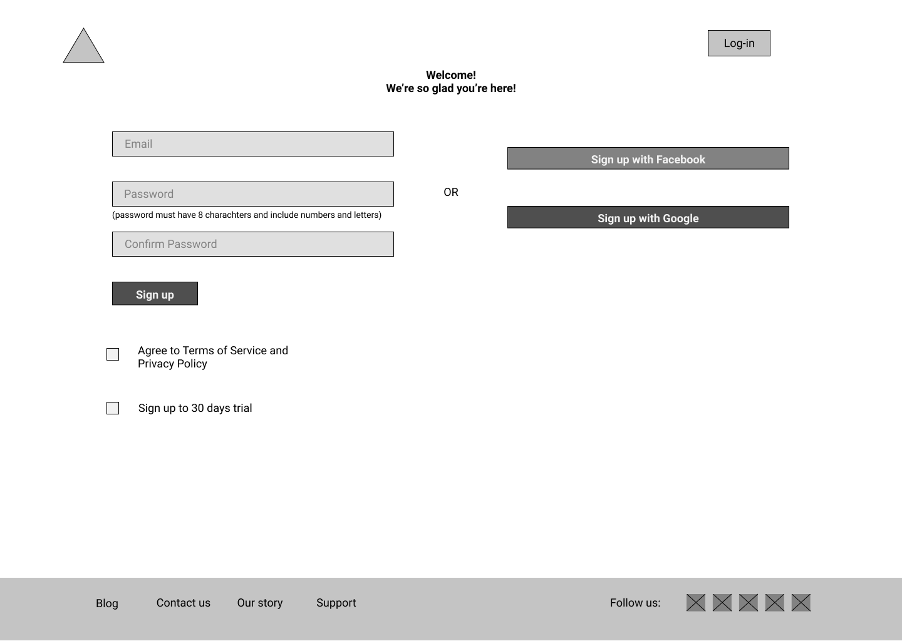Homepage
Create different hooks on CTA buttons to grab users’ attention
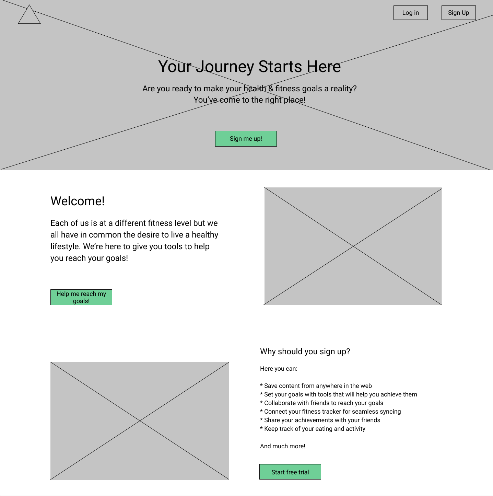USABILITY TEST
I conducted 3 usability tests and tested (You can find the full script here):
1–Signing-up for account
2–Adding a piece of content
3–Organizing a piece of content
4–Sharing something with friends
5–Logging food or activity
Through the testing I discovered some issues with the prototype:
- Adding a piece of content wasn’t easy for all the users
- Organizing a piece of content wasn’t very easy for some of the users
- There was no option of sharing items directly
- There was no option to share other people’s posts on the newsfeed
- If a user went back into settings, they got stuck
- There was no option to add a new recipe on the All Recipes page
You can read the notes from the usability tests here.
RE-EVALUATING PROJECT SCALE
After testing the prototype, I felt that my project got out of scope. I decided to remove some of the user stories/flows from the project that were not necessary for the MVP. This was very hard to do, because I really wanted to have some of those special features that I haven’t seen in other products, but for the sake of keeping within scope, I understood it was necessary.
The tasks that were removed from the project:
- Auto synching the fitness tracker
- Scheduling workouts for the week
- Receiving reports about activity via email
- Choosing how often to receive reports
- Tracking weight
BRANDING
Branding was one of my favorite things in this project.
I made a mind-map, created a moodboard and decided on a color palette. Then I started sketching a few logos.
The emotions and characteristics that I wanted to convey through the brand were happiness, balance, joy, energy, vitality and freshness.
Deciding on a Name
Some of the options were:
Lean & Clean
Muscle & Curve
Fit/Me
Re/Fresh
The concept behind the brand was to combine the two aspects of healthy living: eating right and exercising, and the balance to achieve optimal health. These two elements differ in feeling and expression, but lead to the same end goal - being healthy. My challenge was to combine these different elements in a way that will convey both a calming and energetic feeling.
Mindmap
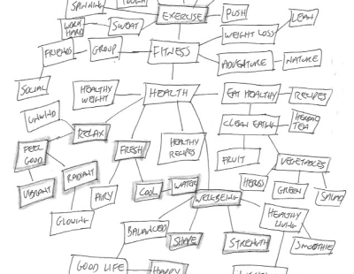CREATING THE LOGO
FIRST SKETCHES
FIRST ITERATIONS
Using Sketch, I began refining the logo ideas. After receiving feedback, it appeared that re:fresh was the right direction. I also decided to remove the mark and only keep the logo type of re:fresh.
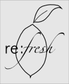 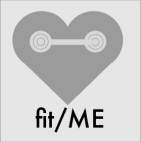FURTHER ITERATIONS
I continued refining the logo and experimenting with different colors, consulting with other designers. The majority leaned towards dark grey for RE: and teal for fresh.
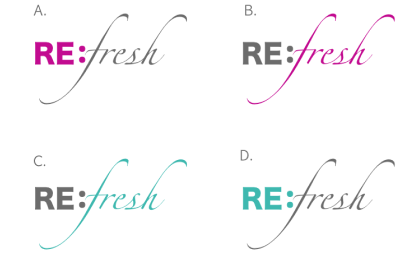I really liked the combination of the heavy RE: with the light fresh in Zapfino. But after receiving critique, I understood that the Zapfino typeface was too light and would break when displayed in small size. I went back and experimented with more typefaces and asked for the opinion of other designers before reaching the final logo design.
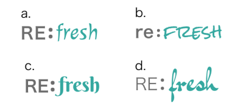FINAL LOGO
The final result conveys the emotions of the brand, and is appealing to both men and women.
BRAND COLORS
The emotions and characteristics that I wanted to convey through the brand were: happiness, balance, joy, energy, vitality and freshness.
I picked a triad color harmony for the brand.
After refining the color palette, I decided to use these colors as the final brand colors:
View Style Guide
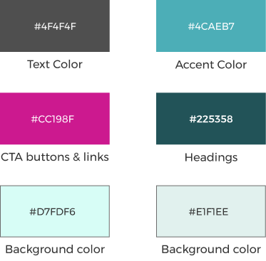HI-FIDELITY MOCKUPS
This is where the research and design came together.
I created the mockups using Figma. The early iterations needed a lot of work.
The main things that needed to change on the homepage were deciding on colors of sections background, how to style the hero image, design of CTA buttons and deciding whether or not to add screenshots of the main features of the app.
I did a few preference tests to help me make some design decisions. I implemented the preferences of the users to my design.
I spent a considerable amount of time creating and refining all the screens needed for the project, paying special attention to consistency, spacing, and alignment.
First Iteration - Home Page
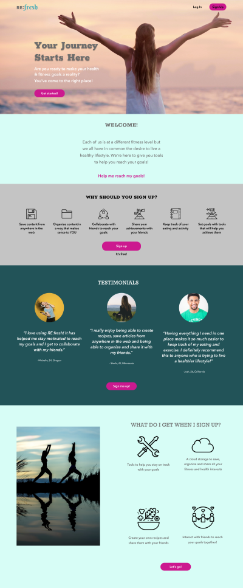First Iteration - Dashboard
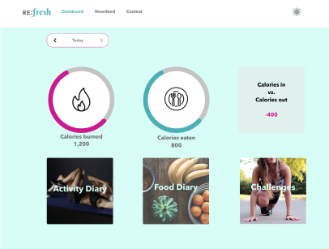Filing System Iteration
One of the main iterations I made was in the process of filing items into folders. At first I had a process that required more clicks, but later I came up with a solution of combining the steps, for better user experience, as shown here:
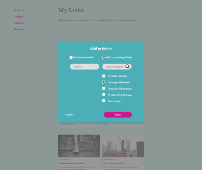CLICKABLE PROTOTYPE II
Now that I had the hi-fi mockups it was time to test them, using InVision’s prototyping tool.
The tasks that I asked the users to do:
1 - Sign-up for an account
2 - Add a piece of content
3 - Organize a piece of content
4 - Share something with your friends on the newsfeed
5 - Log something you ate or an activity
INSIGHTS
- The onboarding process was easy and quick. The users liked that and also liked the fact that it’s a free service.
- Some of the users completed the second task successfully but the location of the folders confused them.
- The task of organizing a piece of content was difficult for all the users. The process needed to improve.
- All the users completed the forth task quickly and easily.
- All the users completed the 5th task quickly and easily.
IMPROVEMENTS
In the next round of iterations, I:
Changed the placement of the folders on My Cloud page and change their size so they are not the main thing on the page.
Added one more screen in the account settings that tells the users that the process is finished, and added a link to the Dashboard.
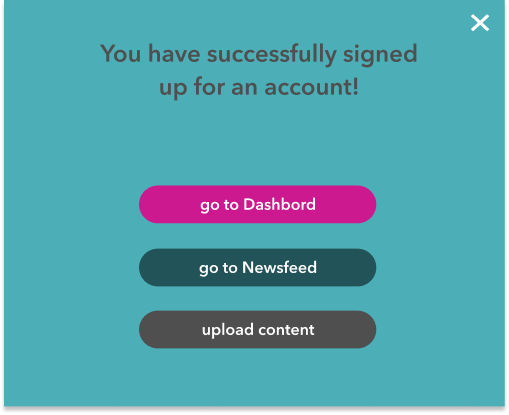I also asked the users about the branding of RE:fresh. I was pleased to hear that the emotions and image I was trying to convey were successful!
FINISHING TOUCHES
Following the user testing, I was ready to make the final changes and put the finishing touches to the project. I went through all the screens and made the improvements that were needed, as well as upgrading a few other visual design elements.
I WASN'T QUITE DONE YET
Well, I thought I was done, but after receiving feedback on my visual design I decided to upgrade my design even more.
Anywhere there was a potential color contrast and readability issues, I changed the colors to create better visual hierarchy.
Improvements to Homepage
- Nav bar was changed to being at the top of the image & logo changed to white
- Border was removed from CTA buttons
- Combined 2 sections into one and added more visual interest and consistency in the stroke of the icons.
Improvements to Dashboard
- Made the dashboard more informationally dense, and more complex by adding more features.
- Added a “quick add” button, which opens another screen upon clicking.
Color Throughout
Having the light teal text caused some color contrast issues as well as having the grey text over light blue background.
I flipped the prioritization - making the nav bar dark green with white text to increase the contrast. Also changed the background color to a lighter blue, so the text would be more readable.
Before
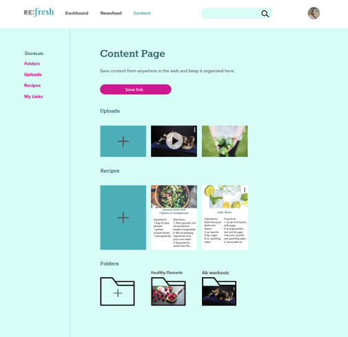After
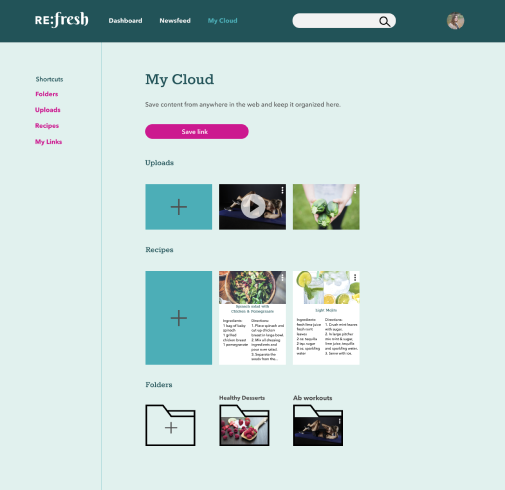FINAL THOUGHTS
Thank you for reading this far!
I created a cloud storage app for health & fitness enthusiasts. I expanded the options of what the users can do on it and I believe I was successful at doing that.
There are a few things that I would do differently or better if I had more time:
1. Improve the folders section and make the filing process easier
2. I would add more features
What I learned about myself
This was a very big project and I enjoyed working on it. I learned that I love to design and get lost in the process. The research and discovery phase was also very interesting and I learned that there are many opportunities in the cloud storage market, but you do have to work hard to create a product that would stand out.
Things that I need to improve:
1. Being more organized, since it’s key to staying within the timeframe.
2. I thought I was good at paying attention to details. But this took it to the next level. That is crucial for producing a professional product.